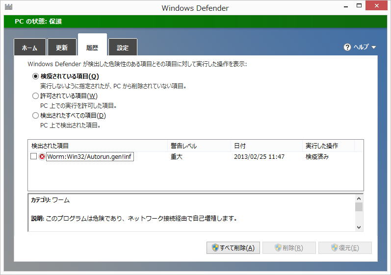

| TOP | weblog | TIPS | Works | リンク |
| 2013-03-17 フリーのクラウドストレージを会社で使うのは危険か？ ウェブサイトで自社の商品や技術を紹介・アッピールしていない会社は新規取引先からは目もむけられないし、仕入、購買、買掛、売上、売掛、etc、どんな会社でも存在する業務は大抵なんらかのソフトウェアを使われているでしょう。 OBCの「勘定」シリーズや弥生の「弥生」シリーズでまかなってきたが、会社が成長するに伴い、だんだん業務に耐えられなくなってシステムをインテグレートする必要に迫られるケースが多いみたいです。 しかしながら自社にIT部門がない場合はインテグレーターにお願いすることになります。 インテグレーターから提出さ提案書や見積もりって正当な評価が難しいのかなと思います。 実はとても簡単な手法で実現できる要求でも、不必要に規模の大きいシステムを提案したり、利用する機会がない機能やサブシステムをひっ付けてたり、説明のつかいないものが見積もり金額に入っていたり。 ちゃんと競合他社の弱点とか費用対効果とかちゃんと調べて武装して提案しているのなら良いと思うんですけど、「フリーだから」だけを理由に否定するケースがあるそうですが、それはおかしいですよね。 DropBoxだって商用利用している会社沢山あると思います。 DropBoｘの２０１０年の利用規約に、（愛と苦悩の日記より） 「当サイト、コンテンツ、ファイル、および、サービスを利用することにより、あなたはDROPBOX社に対し、あなたのコンピュータへアクセスし、『MY DROPBOX』『DROPBOX』フォルダー、および、あなたがDROPBOXにリンクすることを選択した他のすべてのフォルダーの中に置かれている、すべてのファイルにアクセスすることを許可することに同意します」 こう言う規約があるとビジネスでは使えないけど、現在のDropBoxの規約からは削除されているようです。 パーソナルユースでもこれだけ便利なんだから会社でつかっても便利だと思いますよ。 Windowsでも、Macでも、Androidでも、iPhoneでも、iPodでも関係なくマルチプラットホームで使えるところが便利ですね。 「フリーのクラウドストレージのセキュルティは脆弱だからをビジネスでの利用は止めた方がいいのか？」 この是非は利用するユーザーが決めることであって、インテグレーターが「フリー」を理由に否定するのは現代のIT社会を否定しているのと同じと思います。 勿論、個人情報は著作権侵害、漏えいすると取引先や自社に損害を与える情報を外部に漏らすことは法律（または契約）で禁止されています。 それ以外の、守秘の必要がなく共有すると有益な情報は食らう℃ストレージを使うと業務効率がグンと上がります。 いつでもどこでも参照、活用することが出来ることだもの。 余談ですが、6億6600万サイトのうち61.45%(2012年7月調べ）を支えるウェブサーバーソフトウェア「Apache」はフリーでオープンソースソフトウェアですよ。 ウェブサーバー以外にもインターネットど用いられるソフトウェアはOSのLinuxをはじめ、sendmail、Postfix、Apache Tomcat 等、多くのオープンソースソフトウェアが世界中で利用されています。 「カルペンスキー」と言うウィルス対策ソフトを教えてもらいました。 ロシア製のソフトです、全然知らんかった。 僕は自宅のPCを全部WIndows8Proにして、トレンドマイクロの「ウィルスバスター」の契約は止めました。 「Windows Defender」にお任せしてます。  |